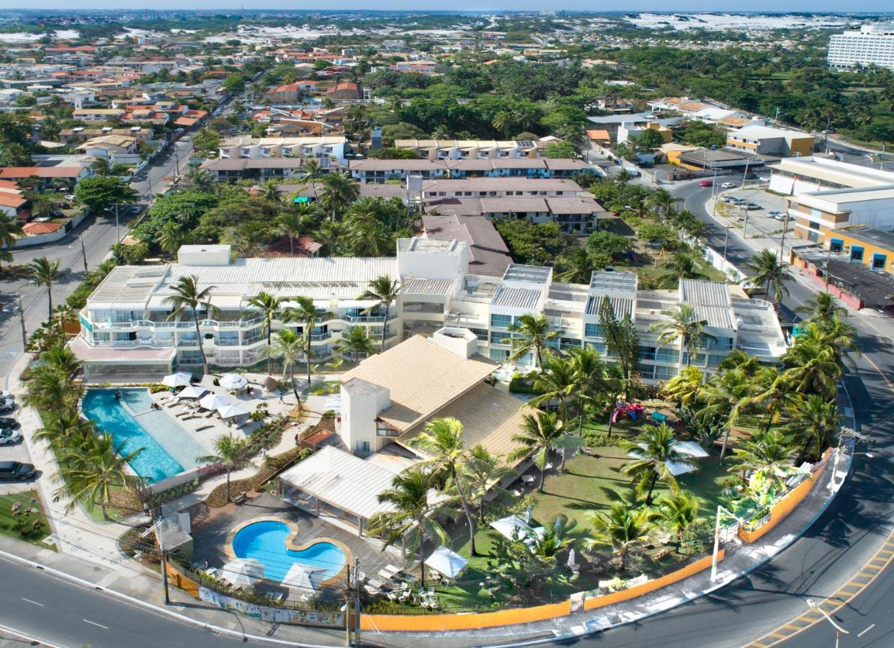

Destinos mas visitados de Brasil
En Brasil hay muchos destinos turisticos muy lindos, a continuacion dejamos una lista con los sitios mas visitados de todo el pais.
| Lugar | Puesto | Visitas Anuales |
| São Paulo | 1 | 15 Millones |
| Salvador | 2 | 2 Millones |
| Florianópolis | 3 | Mas de 2.5 Millones |
| Río de Janeiro | 4 | 2 Millones |
| Natal | 5 | 1.5 Millones |
São Paulo
São Paulo o San Pablo es la ciudad más poblada de Brasil y de todo el continente americano, capital del estado de São Paulo y la principal ciudad de la región metropolitana de São Paulo, en la región sudeste del país. Con una población de 11 451 372 habitantes (en 2021) en la ciudad propia y de 22 048 504 habitantes en su área metropolitana (en 2021), integran la ciudad y la metrópoli más pobladas de América y del hemisferio occidental, además de ser una de las aglomeraciones urbanas más pobladas del mundo.

Salvador
Salvador, fundada como São Salvador da Bahia de Todos os Santos (en portugués), es históricamente conocida en español como San Salvador de la Bahía de Todos los Santos, es una ciudad y municipio brasileño, capital del estado de Bahía y primera capital del Brasil Colonial.
